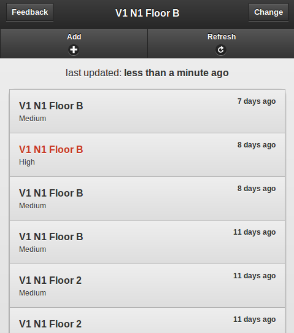

UW Don Tracker
Mobile crowdsourcing of uWaterloo Residence Don locations
Keeping residence live since 2012

Geek Specs
- github
-
Ruby
- Sinatra
- Mongomapper
- MongoDB
- Phonegap
- jQuery
- jQuery Mobile
- Knockout JS
Courses
Coursera
- My Profile
- Functional Programming Principles in Scala (École Polytechnique Fédérale de Lausanne)
- Heterogeneous Parallel Programming (University of Illinois)
- Neural Networks for Machine Learning (University of Toronto)
- Machine Learning (Stanford University)
- Human Computer Intraction (Stanford University)
University of Waterloo
Systems Design Engineering
2B
- Organizational Design & Technology (MSCI 311)
- Cognitive Processes (PSYCH 207)
- Probability and Statistics (SYDE 212)
- Linear Systems and Signals (SYDE 252)
- Engineering Economics of Design (SYDE 262)
- Mechanics of Deformable Solids (SYDE 286)
- Circuits, Instrumentation, and Measurements (SYDE 292)
2A
- Advanced Engineering Math 1 (SYDE 211)
- Data Structures and Algorithms (SYDE 223)
- Design, Systems, and Society (SYDE 261)
- Physics 3 (Electricity, Magnetism and Optics) (SYDE 283)
- Materials Chemistry (SYDE 285)
1B
- Introductory Psychology (PSYCH 101)
- Human Factors in Design (SYDE 162)
- Numerical and Applied Calculus (SYDE 114)
- Physics 2 (Dynamics) (SYDE 182)
- Digital Systems (SYDE 192)
- Digital Systems Laboratory (SYDE 192L)
1A
- Graphics Laboratory (SYDE 101L)
- Fundamental Engineering Math 1 (SYDE 111)
- Matrices and Linear Systems (SYDE 113)
- Introduction to Design (SYDE 161)
- Digital Computation (C++) (SYDE 121)
- Physics 1 (Statics) (SYDE 181)
Past Hackathons and Projects
-
Hack The North
Kickstarted Canada’s largest hackathon attracting 1000+ hackers from 100 schools in 10 countries. Built everything from the website to the actual event and everything in between. -
Lunch Roulette (Hacktech 2014)
An android app to pair you up with strangers to have amazing lunches with. You can even check out a slide deck of our design and process. -
HackMIT
Selflessly helped all my friends with their projects, didn't get time to hack on my own. -
MHacks II
Lots of small little projects, not too interesting. -
NavajoChat (PennApps 2013)
A chrome extension for seamless encryption of Facebook messages. Even made a quick and dirty demo video. -
Top Pics (CUTC Toronto 2012, 2nd Place Winner)
A tool for aggregating the best photos from your social network. -
SurroundSound (MHacks I, 2012)
A solution to bad music at social events. Provies a currated youtube playlist to a DJ from the attendees music preferences. -
Icebreaker (uWaterloo Facebook Hackathon 2012)
Shows you what you have in common with the people around along with something to say to help "break the ice".
Words I have spoken
Improving Firefox Network Error Experiences April 21, 2014
I discuss redesigning the experience of dealing with network related errors in Firefox. The goal: Less frustration, more browsing.
▶ Watch on Air Mozilla or check out the slides.
Version controlled, open source design documents August 28th, 2014
A guided tour through my design methodology which introduces version control and open source thinking to User Experience design.
▶ Watch on Air Mozilla or check out the slides.